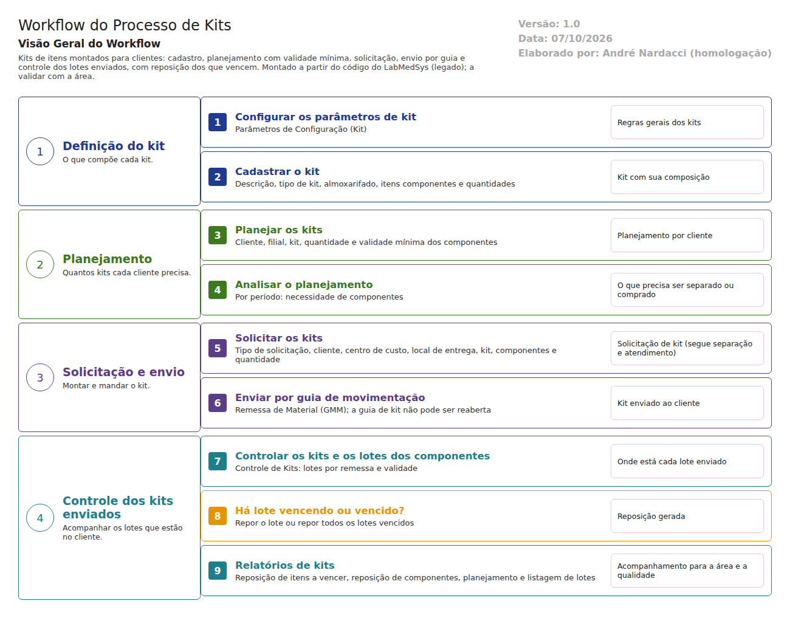

Objetivo
Este documento descreve o fluxo de kits no LabMedSys: conjuntos de itens montados para clientes, com cadastro, planejamento, solicitação, envio por guia de movimentação e controle dos lotes enviados, incluindo a reposição dos que vencem.
Foi montado a partir do código do sistema legado. O uso de kits pela empresa precisa ser confirmado com a área. Pelo código, parecem kits enviados a clientes em consignação, por exemplo para hospitais. Os casos de teste estão no fim.
Escopo
- Parâmetros e cadastro de kits.
- Planejamento por cliente e análise do planejamento.
- Solicitação de kits e envio por guia (Remessa de Material (GMM)).
- Controle dos kits enviados, lotes dos componentes e reposição.
Fora do escopo: a separação e o atendimento em si (fluxo de solicitação) e a remessa comum (fluxo de remessa).
Nomes das telas: como aparecem no alto de cada tela. Pelo código, GMM é a guia de movimentação: a solicitação de kit fica "vinculada a uma Guia de Movimentação". A confirmar o nome completo com a área.
Visão geral do processo

O kit é cadastrado com descrição, tipo, almoxarifado e itens componentes. O planejamento define, por cliente e filial, quantos kits enviar e a validade mínima dos componentes. A análise do planejamento mostra a necessidade por período.
A solicitação de kits segue a separação e o atendimento e é enviada por guia de movimentação. O Controle de Kits acompanha os lotes que estão no cliente e permite repor um lote ou todos os lotes vencidos.
Descrição funcional das etapas
"A numeração das regras de negócio é reiniciada em cada atividade, visando facilitar sua identificação e manutenção."
Cadastro e parâmetros
Regras de negócio
- RN001 – O kit exige descrição, tipo de kit, almoxarifado, itens componentes e quantidades, e justificativa na alteração (
kit/cadastro_kit_ed.aspx). - RN002 – Os Parâmetros de Configuração (Kit) definem regras gerais; a detalhar no teste quais são.
Telas do sistema
| Módulo | Tela | Finalidade |
|---|---|---|
| Estoque | Parâmetros de Configuração (Kit) | Regras gerais |
| Estoque | Cadastro de Kits | Composição do kit |
Planejamento
Regras de negócio
- RN001 – Exige cliente, filial, kit, quantidade e validade mínima (
kit/planejamento_kit_ed.aspx). - RN002 – O mesmo kit não pode repetir no planejamento atual ("O KIT informado já existe no planejamento atual!").
- RN003 – A análise do planejamento exige o período.
Telas do sistema
| Módulo | Tela | Finalidade |
|---|---|---|
| Estoque | Planejamento de Kits | Planejar por cliente |
| Estoque | Análise do Planejamento de Kits | Necessidade por período |
Solicitação e envio
Regras de negócio
- RN001 – Exige tipo de solicitação, cliente, centro de custo, local de entrega, kit, componentes, quantidade de kits e almoxarifado (
kit/solicitacao_kit_ed.aspx). - RN002 – A solicitação de kit gera itens de solicitação comuns, e a separação segue o fluxo de solicitação. O gatilho do banco que recalculava a situação da solicitação está desligado (
TBL_SOLICITACAO_ITEM.sql:76). - RN003 – Solicitação ligada a uma guia de movimentação não pode ser alterada livremente ("Solicitação vinculada a uma Guia de Movimentação"). A guia de kit não pode ser reaberta e a remessa de kit não pode ser excluída (fluxo de remessa).
- RN004 – A confirmar no teste: se a validade mínima do planejamento impede separar componentes com validade menor.
Telas do sistema
| Módulo | Tela | Finalidade |
|---|---|---|
| Estoque | Solicitação de Kits | Pedir a montagem |
| Estoque | Remessa de Material (GMM) | Enviar por guia |
Controle e reposição
Regras de negócio
- RN001 – O Controle de Kits mostra os kits enviados e os lotes de cada componente, por remessa (
kit/controle_kit_lote_op.aspx.cs:62). - RN002 – Permite repor um lote ou repor os lotes vencidos (
controle_kit_lote_op.aspx.cs:114-149). A confirmar no teste: o que a reposição gera (nova solicitação ou remessa) e o que acontece com o lote vencido que está no cliente. - RN003 – Na tela de lotes do componente, o código não mostra justificativa nem histórico.
Telas do sistema
| Módulo | Tela | Finalidade |
|---|---|---|
| Estoque | Controle de Kits | Kits enviados |
| Estoque | Controle de Kits - Detalhes | Detalhe do kit |
| Estoque | Controle de Kits - Lotes do Componente | Lotes no cliente e reposição |
| Estoque | Relatório - Reposição de Itens a Vencer (Kit) | Lotes a vencer |
| Estoque | Relatório - Reposição de Componentes do Kit | Reposições |
| Estoque | Relatório - Planejamento de Kits | Planejamento |
| Estoque | Relatório - Listagem de Lotes (Kit) | Lotes por kit |
Ponto para validar com a área
Para a ANVISA, o que importa é saber em que cliente está cada lote (rastreabilidade para um eventual recolhimento) e não deixar lote vencido em uso. O controle de kits parece cobrir isso, mas sem justificativa nem histórico na reposição. Confirmar com a área se os kits são usados e qual é o processo real.
Casos de teste
Dados: o kit TESTE KIT com dois componentes (TESTE MATERIA PRIMA e TESTE EMBALAGEM); a pessoa jurídica TESTE PJ FARMACÊUTICA LTDA como cliente; o centro de custo TESTE CC ESTOQUE; lotes com validades diferentes, um vencendo em poucos dias.
| Caso | O que fazer | Resultado esperado |
|---|---|---|
| CT-EST-150 | Cadastrar o TESTE KIT sem componente e depois completo |
Recusa; completo, salvo |
| CT-EST-151 | Planejar o TESTE KIT para o cliente com validade mínima de 180 dias; repetir o mesmo kit |
Primeiro salvo; segundo recusado |
| CT-EST-152 | Análise do planejamento sem período e com período | Recusa; com período, mostra a necessidade |
| CT-EST-153 | Solicitar o kit e separar: tentar usar o lote que vence em poucos dias | Registrar se a validade mínima é respeitada (RN004) |
| CT-EST-154 | Enviar pela Remessa de Material (GMM) e tentar reabrir a guia | Enviado; reabertura recusada |
| CT-EST-155 | Controle de Kits: ver os lotes do componente no cliente | Mostra lote, validade e remessa |
| CT-EST-156 | Repor o lote que está vencendo | Registrar o que é gerado e se fica no histórico |
| CT-EST-157 | Relatórios de kit (reposição a vencer, reposição de componentes, planejamento, listagem de lotes) | Mostram os dados TESTE |
| CT-EST-158 | Permissão: abrir Controle de Kits pelo endereço com usuário sem acesso | Acesso negado (ver DV-EST-008) |